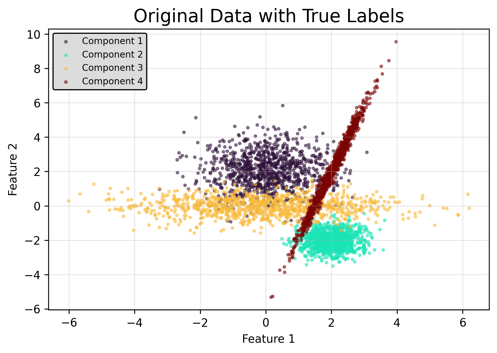
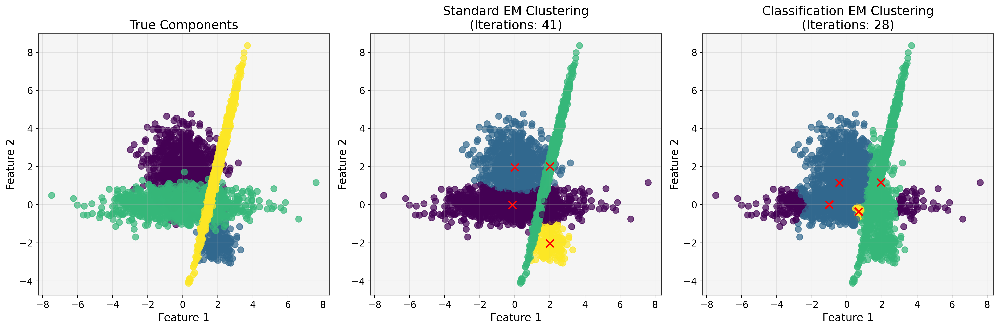
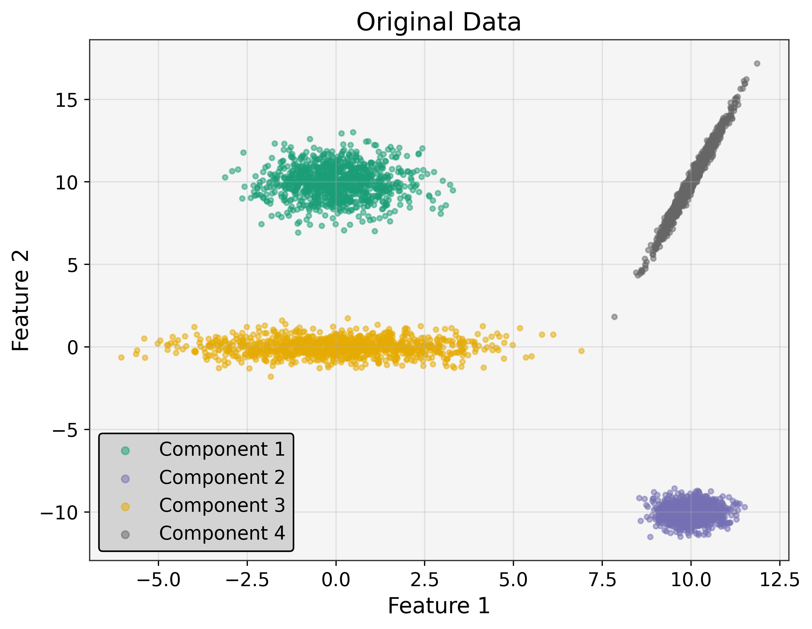
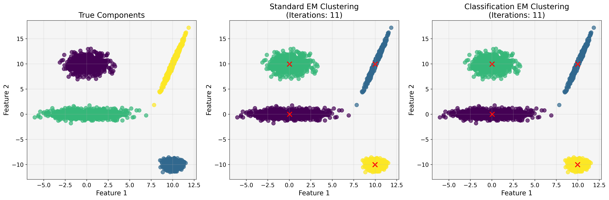

[77]:
import torch
import numpy as np
import matplotlib.pyplot as plt
from matplotlib import cm
import time
import seaborn as sns
from tqdm.notebook import tqdm
from sklearn.metrics import adjusted_rand_score, silhouette_score
import os
os.chdir('../')
from tgmm import GMMInitializer, dynamic_figsize, plot_gmm
from TorchGMM.tgmm.gmm import GaussianMixture
# Set random seed for reproducibility
random_state = 0
np.random.seed(random_state)
torch.manual_seed(random_state)
# Check for GPU
device = 'cuda' if torch.cuda.is_available() else 'cpu'
print(f"Using device: {device}")
if device == 'cuda':
torch.cuda.manual_seed(random_state)
print('CUDA version:', torch.version.cuda)
print('Device:', torch.cuda.get_device_name(0))
Using device: cuda
CUDA version: 12.4
Device: NVIDIA GeForce RTX 4060 Laptop GPU
[78]:
n_samples = [800, 200, 1000, 1000]
centers = [np.array([0, 2]),
np.array([2, -2]),
np.array([0, 0]),
np.array([2, 2])]
covs = [
1.0 * np.eye(2), # spherical covariance
0.5 * np.eye(2), # spherical covariance, fewer points
np.array([[2, 0], [0, 0.5]]), # diagonal covariance
np.array([[0.2, 0.5], [0.5, 2]]) # full covariance
]
components = []
for n, center, cov in zip(n_samples, centers, covs):
samples = np.dot(np.random.randn(n, 2), cov) + center
components.append(samples)
X = np.vstack(components)
labels = np.concatenate([i * np.ones(n) for i, n in enumerate(n_samples)])
legend_labels = [f'Component {i+1}' for i in range(len(n_samples))]
n_features = X.shape[1]
n_components = len(n_samples)
# Convert to tensor (if needed for further processing)
device = torch.device("cuda" if torch.cuda.is_available() else "cpu")
X_tensor = torch.tensor(X, dtype=torch.float32, device=device)
plot_gmm(X=X, labels=labels, title='Original Data', legend_labels=legend_labels)
plt.show()

[79]:
def fit_and_evaluate_gmm(X_tensor, n_components, covariance_type='full', cem=False, random_state=42):
"""Fit a GMM with either EM or CEM and return the model and timing."""
# Initialize the GMM
gmm = GaussianMixture(
n_components=n_components,
covariance_type=covariance_type,
tol=1e-6,
reg_covar=1e-6,
max_iter=1000,
n_init=5,
init_params='points',
random_state=random_state,
verbose=True,
device=device,
cem=cem # Toggle between EM and CEM
)
# Time the fitting process
start_time = time.time()
gmm.fit(X_tensor)
end_time = time.time()
return gmm, end_time - start_time
# Fit both models
print("Fitting GMM using standard EM algorithm...")
gmm_em, time_em = fit_and_evaluate_gmm(X_tensor, n_components, cem=False)
print("\nFitting GMM using Classification EM (CEM) algorithm...")
gmm_cem, time_cem = fit_and_evaluate_gmm(X_tensor, n_components, cem=True)
# Print basic comparison
print("\n----- Performance Comparison -----")
print(f"EM: Time: {time_em:.2f}s, Iterations: {gmm_em.n_iter_}, Log-likelihood: {gmm_em.lower_bound_:.2f}")
print(f"CEM: Time: {time_cem:.2f}s, Iterations: {gmm_cem.n_iter_}, Log-likelihood: {gmm_cem.lower_bound_:.2f}")
Fitting GMM using standard EM algorithm...
[InitRun 0] Iter 0, lower bound: -3.80971
[InitRun 0] Iter 10, lower bound: -3.19473
[InitRun 0] Iter 20, lower bound: -3.17760
[InitRun 0] Iter 30, lower bound: -3.15982
[InitRun 0] Iter 40, lower bound: -3.15908
[InitRun 0] Converged at iteration 41, lower bound=-3.15908
[InitRun 1] Iter 0, lower bound: -3.80971
[InitRun 1] Iter 10, lower bound: -3.19473
[InitRun 1] Iter 20, lower bound: -3.17760
[InitRun 1] Iter 30, lower bound: -3.15982
[InitRun 1] Iter 40, lower bound: -3.15908
[InitRun 1] Converged at iteration 41, lower bound=-3.15908
[InitRun 2] Iter 0, lower bound: -3.80971
[InitRun 2] Iter 10, lower bound: -3.19473
[InitRun 2] Iter 20, lower bound: -3.17760
[InitRun 2] Iter 30, lower bound: -3.15982
[InitRun 2] Iter 40, lower bound: -3.15908
[InitRun 2] Converged at iteration 41, lower bound=-3.15908
[InitRun 3] Iter 0, lower bound: -3.80971
[InitRun 3] Iter 10, lower bound: -3.19473
[InitRun 3] Iter 20, lower bound: -3.17760
[InitRun 3] Iter 30, lower bound: -3.15982
[InitRun 3] Iter 40, lower bound: -3.15908
[InitRun 3] Converged at iteration 41, lower bound=-3.15908
[InitRun 4] Iter 0, lower bound: -3.80971
[InitRun 4] Iter 10, lower bound: -3.19473
[InitRun 4] Iter 20, lower bound: -3.17760
[InitRun 4] Iter 30, lower bound: -3.15982
[InitRun 4] Iter 40, lower bound: -3.15908
[InitRun 4] Converged at iteration 41, lower bound=-3.15908
Fitting GMM using Classification EM (CEM) algorithm...
[InitRun 0] Iter 0, lower bound: -3.81739
[InitRun 0] Iter 10, lower bound: -3.64095
[InitRun 0] Iter 20, lower bound: -3.64051
[InitRun 0] Converged at iteration 28, lower bound=-3.64338
[InitRun 1] Iter 0, lower bound: -3.81739
[InitRun 1] Iter 10, lower bound: -3.64095
[InitRun 1] Iter 20, lower bound: -3.64051
[InitRun 1] Converged at iteration 28, lower bound=-3.64338
[InitRun 2] Iter 0, lower bound: -3.81739
[InitRun 2] Iter 10, lower bound: -3.64095
[InitRun 2] Iter 20, lower bound: -3.64051
[InitRun 2] Converged at iteration 28, lower bound=-3.64338
[InitRun 3] Iter 0, lower bound: -3.81739
[InitRun 3] Iter 10, lower bound: -3.64095
[InitRun 3] Iter 20, lower bound: -3.64051
[InitRun 3] Converged at iteration 28, lower bound=-3.64338
[InitRun 4] Iter 0, lower bound: -3.81739
[InitRun 4] Iter 10, lower bound: -3.64095
[InitRun 4] Iter 20, lower bound: -3.64051
[InitRun 4] Converged at iteration 28, lower bound=-3.64338
----- Performance Comparison -----
EM: Time: 0.22s, Iterations: 41, Log-likelihood: -3.16
CEM: Time: 0.16s, Iterations: 28, Log-likelihood: -3.64
[80]:
# Get predictions from both models
y_pred_em = gmm_em.predict(X_tensor).cpu().numpy()
y_pred_cem = gmm_cem.predict(X_tensor).cpu().numpy()
# Create a function to plot the results
def plot_clustering_results(X, true_labels, pred_labels_em, pred_labels_cem, gmm_em, gmm_cem):
"""Plot the clustering results for both EM and CEM algorithms."""
fig, axes = plt.subplots(1, 3, figsize=(18, 6))
# Plot true labels
axes[0].scatter(X[:, 0], X[:, 1], c=true_labels, cmap='viridis', alpha=0.7)
axes[0].set_title('True Components')
axes[0].set_xlabel('Feature 1')
axes[0].set_ylabel('Feature 2')
axes[0].grid(alpha=0.3)
# Plot EM results
axes[1].scatter(X[:, 0], X[:, 1], c=pred_labels_em, cmap='viridis', alpha=0.7)
# Plot ellipses for EM
means_em = gmm_em.means_.cpu().detach().numpy()
for i, mean in enumerate(means_em):
axes[1].scatter(mean[0], mean[1], c='red', s=100, marker='x')
axes[1].set_title(f'Standard EM Clustering\n(Iterations: {gmm_em.n_iter_})')
axes[1].set_xlabel('Feature 1')
axes[1].set_ylabel('Feature 2')
axes[1].grid(alpha=0.3)
# Plot CEM results
axes[2].scatter(X[:, 0], X[:, 1], c=pred_labels_cem, cmap='viridis', alpha=0.7)
# Plot ellipses for CEM
means_cem = gmm_cem.means_.cpu().detach().numpy()
for i, mean in enumerate(means_cem):
axes[2].scatter(mean[0], mean[1], c='red', s=100, marker='x')
axes[2].set_title(f'Classification EM Clustering\n(Iterations: {gmm_cem.n_iter_})')
axes[2].set_xlabel('Feature 1')
axes[2].set_ylabel('Feature 2')
axes[2].grid(alpha=0.3)
plt.tight_layout()
plt.show()
# Plot the results
plot_clustering_results(X, labels, y_pred_em, y_pred_cem, gmm_em, gmm_cem)
# Compute some evaluation metrics
print("Adjusted Rand Index (higher is better):")
print(f" EM: {adjusted_rand_score(labels, y_pred_em):.4f}")
print(f" CEM: {adjusted_rand_score(labels, y_pred_cem):.4f}")
print("\nSilhouette Score (higher is better):")
print(f" EM: {silhouette_score(X, y_pred_em):.4f}")
print(f" CEM: {silhouette_score(X, y_pred_cem):.4f}")

Adjusted Rand Index (higher is better):
EM: 0.8114
CEM: 0.3653
Silhouette Score (higher is better):
EM: 0.2040
CEM: -0.0298
[81]:
n_samples = [1000, 1000, 1000, 1000]
centers = [np.array([0, 10]),
np.array([10, -10]),
np.array([0, 0]),
np.array([10, 10])]
covs = [
1.0 * np.eye(2), # spherical covariance
0.5 * np.eye(2), # spherical covariance, fewer points
np.array([[2, 0], [0, 0.5]]), # diagonal covariance
np.array([[0.2, 0.5], [0.5, 2]]) # full covariance
]
components = []
for n, center, cov in zip(n_samples, centers, covs):
samples = np.dot(np.random.randn(n, 2), cov) + center
components.append(samples)
X = np.vstack(components)
labels = np.concatenate([i * np.ones(n) for i, n in enumerate(n_samples)])
legend_labels = [f'Component {i+1}' for i in range(len(n_samples))]
n_features = X.shape[1]
n_components = len(n_samples)
# Convert to tensor (if needed for further processing)
device = torch.device("cuda" if torch.cuda.is_available() else "cpu")
X_tensor = torch.tensor(X, dtype=torch.float32, device=device)
plot_gmm(X=X, labels=labels, title='Original Data', legend_labels=legend_labels)
plt.show()

[82]:
def fit_and_evaluate_gmm(X_tensor, n_components, covariance_type='full', cem=False, random_state=42):
"""Fit a GMM with either EM or CEM and return the model and timing."""
# Initialize the GMM
gmm = GaussianMixture(
n_components=n_components,
covariance_type=covariance_type,
tol=1e-6,
reg_covar=1e-6,
max_iter=1000,
n_init=5,
init_params='random',
random_state=random_state,
verbose=True,
device=device,
cem=cem # Toggle between EM and CEM
)
# Time the fitting process
start_time = time.time()
gmm.fit(X_tensor)
end_time = time.time()
return gmm, end_time - start_time
# Fit both models
print("Fitting GMM using standard EM algorithm...")
gmm_em, time_em = fit_and_evaluate_gmm(X_tensor, n_components, cem=False)
print("\nFitting GMM using Classification EM (CEM) algorithm...")
gmm_cem, time_cem = fit_and_evaluate_gmm(X_tensor, n_components, cem=True)
# Print basic comparison
print("\n----- Performance Comparison -----")
print(f"EM: Time: {time_em:.2f}s, Iterations: {gmm_em.n_iter_}, Log-likelihood: {gmm_em.lower_bound_:.2f}")
print(f"CEM: Time: {time_cem:.2f}s, Iterations: {gmm_cem.n_iter_}, Log-likelihood: {gmm_cem.lower_bound_:.2f}")
Fitting GMM using standard EM algorithm...
[InitRun 0] Iter 0, lower bound: -4.58323
[InitRun 0] Iter 10, lower bound: -3.39467
[InitRun 0] Converged at iteration 11, lower bound=-3.39467
[InitRun 1] Iter 0, lower bound: -4.58323
[InitRun 1] Iter 10, lower bound: -3.39467
[InitRun 1] Converged at iteration 11, lower bound=-3.39467
[InitRun 2] Iter 0, lower bound: -4.58323
[InitRun 2] Iter 10, lower bound: -3.39467
[InitRun 2] Converged at iteration 11, lower bound=-3.39467
[InitRun 3] Iter 0, lower bound: -4.58323
[InitRun 3] Iter 10, lower bound: -3.39467
[InitRun 3] Converged at iteration 11, lower bound=-3.39467
[InitRun 4] Iter 0, lower bound: -4.58323
[InitRun 4] Iter 10, lower bound: -3.39467
[InitRun 4] Converged at iteration 11, lower bound=-3.39467
Fitting GMM using Classification EM (CEM) algorithm...
[InitRun 0] Iter 0, lower bound: -4.45679
[InitRun 0] Iter 10, lower bound: -3.39467
[InitRun 0] Converged at iteration 11, lower bound=-3.39467
[InitRun 1] Iter 0, lower bound: -4.45679
[InitRun 1] Iter 10, lower bound: -3.39467
[InitRun 1] Converged at iteration 11, lower bound=-3.39467
[InitRun 2] Iter 0, lower bound: -4.45679
[InitRun 2] Iter 10, lower bound: -3.39467
[InitRun 2] Converged at iteration 11, lower bound=-3.39467
[InitRun 3] Iter 0, lower bound: -4.45679
[InitRun 3] Iter 10, lower bound: -3.39467
[InitRun 3] Converged at iteration 11, lower bound=-3.39467
[InitRun 4] Iter 0, lower bound: -4.45679
[InitRun 4] Iter 10, lower bound: -3.39467
[InitRun 4] Converged at iteration 11, lower bound=-3.39467
----- Performance Comparison -----
EM: Time: 0.45s, Iterations: 11, Log-likelihood: -3.39
CEM: Time: 0.47s, Iterations: 11, Log-likelihood: -3.39
[83]:
# Get predictions from both models
y_pred_em = gmm_em.predict(X_tensor).cpu().numpy()
y_pred_cem = gmm_cem.predict(X_tensor).cpu().numpy()
# Create a function to plot the results
def plot_clustering_results(X, true_labels, pred_labels_em, pred_labels_cem, gmm_em, gmm_cem):
"""Plot the clustering results for both EM and CEM algorithms."""
fig, axes = plt.subplots(1, 3, figsize=(18, 6))
# Plot true labels
axes[0].scatter(X[:, 0], X[:, 1], c=true_labels, cmap='viridis', alpha=0.7)
axes[0].set_title('True Components')
axes[0].set_xlabel('Feature 1')
axes[0].set_ylabel('Feature 2')
axes[0].grid(alpha=0.3)
# Plot EM results
axes[1].scatter(X[:, 0], X[:, 1], c=pred_labels_em, cmap='viridis', alpha=0.7)
# Plot ellipses for EM
means_em = gmm_em.means_.cpu().detach().numpy()
for i, mean in enumerate(means_em):
axes[1].scatter(mean[0], mean[1], c='red', s=100, marker='x')
axes[1].set_title(f'Standard EM Clustering\n(Iterations: {gmm_em.n_iter_})')
axes[1].set_xlabel('Feature 1')
axes[1].set_ylabel('Feature 2')
axes[1].grid(alpha=0.3)
# Plot CEM results
axes[2].scatter(X[:, 0], X[:, 1], c=pred_labels_cem, cmap='viridis', alpha=0.7)
# Plot ellipses for CEM
means_cem = gmm_cem.means_.cpu().detach().numpy()
for i, mean in enumerate(means_cem):
axes[2].scatter(mean[0], mean[1], c='red', s=100, marker='x')
axes[2].set_title(f'Classification EM Clustering\n(Iterations: {gmm_cem.n_iter_})')
axes[2].set_xlabel('Feature 1')
axes[2].set_ylabel('Feature 2')
axes[2].grid(alpha=0.3)
plt.tight_layout()
plt.show()
# Plot the results
plot_clustering_results(X, labels, y_pred_em, y_pred_cem, gmm_em, gmm_cem)
# Compute some evaluation metrics
print("Adjusted Rand Index (higher is better):")
print(f" EM: {adjusted_rand_score(labels, y_pred_em):.4f}")
print(f" CEM: {adjusted_rand_score(labels, y_pred_cem):.4f}")
print("\nSilhouette Score (higher is better):")
print(f" EM: {silhouette_score(X, y_pred_em):.4f}")
print(f" CEM: {silhouette_score(X, y_pred_cem):.4f}")

Adjusted Rand Index (higher is better):
EM: 1.0000
CEM: 1.0000
Silhouette Score (higher is better):
EM: 0.8210
CEM: 0.8210